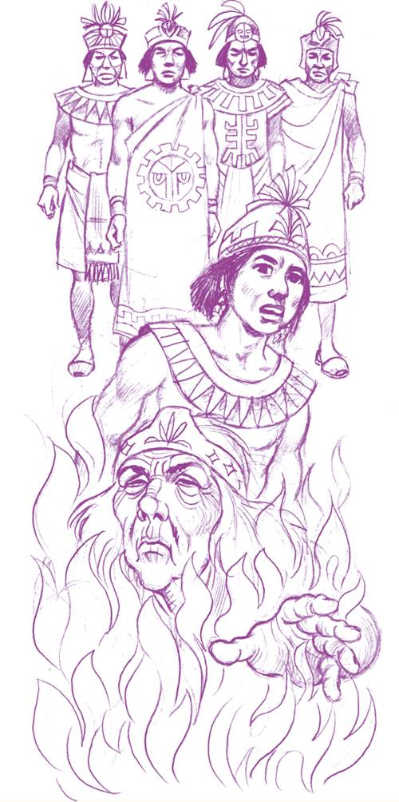

Reflexiono para avanzar
Alumno:
Reflexiono para avanzar
Alumno:
1. ¿Crees que para narrar un mito necesitas usar un lenguaje estético? ¿Por qué?
2. Lee el siguiente mito:
El Sol y la Luna
(Mito mexicano)

Antes de que hubiera luz en el mundo, los dioses de Teotihuacán hablaron entre sí para decidir quiénes iban a dar luz al mundo. Todos los dioses estaban en un salón grande de uno de los muchos templos. Preguntaron:
—¿Quiénes de nosotros van a dar luz al mundo?
Todos sabían que dar luz al mundo no era una tarea fácil. Iba a costar la vida de los que decidieran hacerlo, pues tenían que echarse en una gran hoguera. Nadie contestó al principio. Luego, uno de los dioses más jóvenes, Tecuciztécatl, habló y dijo en voz alta:
—Yo estoy dispuesto a echarme al fuego.
—¡Tecuciztécatl, eres un gran dios! Todos te felicitamos.
Pero necesitaban dos dioses y no había otro dios lo suficientemente valiente para acompañar a Tecuciztécatl. Él se burló de los otros diciendo:
—¿Dónde hay un dios tan valiente como yo en toda la región? ¿Nadie se atreve a ofrecer su vida para dar luz al mundo?
Nadie contestó. Todos guardaron silencio por unos minutos y luego comenzaron a discutir entre sí. Durante la discusión el ruido era tan grande y el movimiento tanto que no se dieron cuenta de que un dios viejito se levantó lentamente y se puso delante de todos ellos. El viejito era pobre y humilde. Su ropa no era elegante.
—¿Qué quiere él? —dijeron algunos.
—No tenemos tiempo para los viejitos ahora —contestaron los más jóvenes.
—¿Cómo puede querer un viejito dar su vida? —observaron los principales de entre los dioses. Pero el viejito, levantando la mano, pidiendo silencio, respondió:
—Yo soy Nanoatzín, viejo, sí, pero dispuesto a dar mi vida. El mundo necesita luz. Como no hay otros voluntarios, quiero ofrecer lo que queda de mi vida para dar luz al mundo.
—!Grande es Nanoatzin! —gritaron todos después de un momento de silencio. Si las felicitaciones dadas a Tecuciztécatl fueron muchas, las dadas a Nanoatzín fueron mayores.
Luego, todos se pusieron a hacer la ropa necesaria para la ceremonia. Era muy bonita, de algodón muy fino, con oro, plata y plumas de aves de todos colores.
Durante toda una semana nadie comió. Todos estaban en estado de meditación, porque dar luz al mundo era muy importante.
Cuando llegó el día, encendieron una gran hoguera en el centro del salón. La luz lo iluminó todo.
Tecuciztécatl fue el primero que se acercó al fuego, pero el calor era tanto que él se retiró. Cuatro veces trató de entrar, pero él no se atrevía.
Luego, Nanoatzín, el viejito, se levantó y caminó hacia la hoguera. Él entró en el fuego y se acostó tranquilamente. —¡Ay! —dijeron todos con mucha reverencia. Y en voz baja todos repitieron:
—¡Grande es Nanoatzín!
Después le tocó a Tecuciztécatl. Él tenía vergüenza. El viejito no tenía miedo, y él sí. Así que él se echó al fuego también.
Todos los dioses esperaron y, cuando ya no había fuego, se levantaron y salieron del salón para esperar las luces.
No sabían de qué dirección ni cómo iba a llegar la luz. De repente, un rayo de Sol apareció en el Este; luego, el Sol entero. Era muy brillante y todos sabían que era Nanoatzín, porque él entró en el fuego primero.
Después de algún tiempo, salió también otra luz. Era la Luna, y era tan brillante como el Sol.
Uno de los dioses dijo:
—No debemos tener dos luces iguales. Nanoatzín entró primero. Él debe tener la luz más fuerte. Debemos oscurecer un poco la segunda luz.
Y otro de los dioses agarró un conejo y lo arrojó al cielo, pegándole a la Luna.
Hasta el día de hoy, el Sol es más brillante que la Luna; y si uno se fija bien en ella, puede ver las huellas del conejo.
Recuperado de https://goo.gl/PZogQD